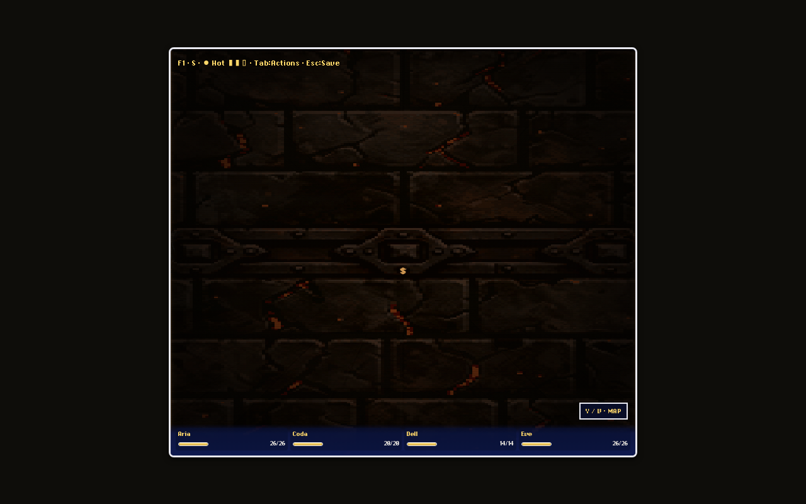
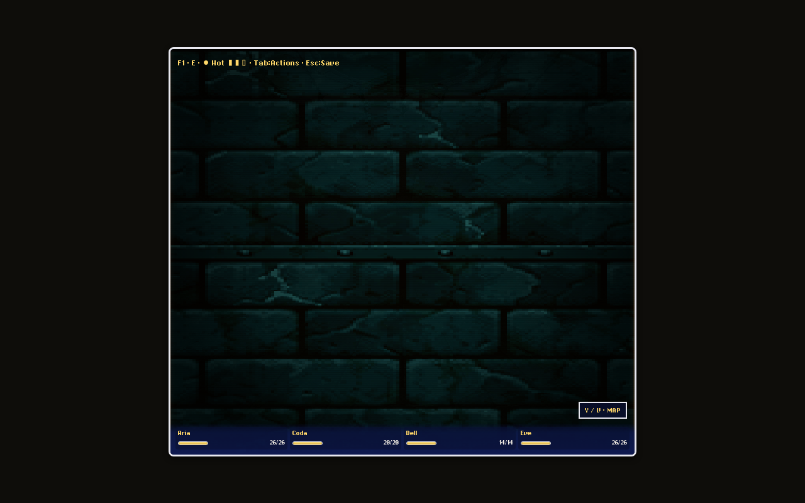

Curated, transparent surface details composited by the existing corridor renderer. New wall art is intentionally sparse; the existing reviewed ceiling library is shown alongside it.
Live F1 unfinished-index capture — sparse moss placement.

Live F1 forge capture — soot placement over regional stone.

Live F1 cistern capture — damp streak placement over wet stone.
Raw captures are also retained at playtest-screenshots/floor1-art-qa/. The gallery keeps isolated art and in-engine evidence separate so a transparent source is never mistaken for its projected appearance.